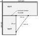
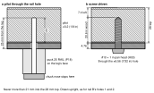
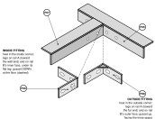
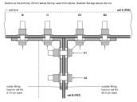
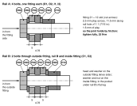

H · The joint
Both tops stand on their rings (chapter G); top B's end meets top A's front edge and rail B's end touches rail A. You work from below, lying in the knee space. The two gusseted fittings bolted round rail B's end, not the joining plates, carry the inside corner of top B.
!SEQUENCE: THE FITTINGS GO ON LAST SOURCE-DEFINED
1 · The two surfaces are flush at the joint, levelled with the feet, never packed (step 1).
2 · Rail B's end touches rail A's vertical leg; rail B's outer face is on the taped 52.0 cm mark; the L is square (step 2).
3 · Joining plates P1 and P2 are screwed across the joint (step 3). They align the tops; they do not carry the corner.
4 · Rail B's screws 1 and 2 are in top A (step 4). The inside fitting sits right under them and would block the driver.
5 · Only then the fittings (steps 5–7), and the bolts tightened last (step 8).
| Part | Qty | | Hardware | Qty |
|---|
| P06 P07 | Rail A, rail B, on the tops (chapter F) | 1 + 1 | H03 | #10 × 1 in pan head, Robertson (rail B holes 1, 2) | 2 |
| P08 | Gusseted 90° strut fitting, 5 mm, legs 100.5 × 41 mm, two 21 × 12 mm slots per leg VERIFIED | 2 | H04 H05 | #10 × 5/8 in pan head, #10 washer (plates) | 8 + 8 |
| P11 | Mending plate 10 × 3 × 0.12 in (joining plates P1, P2) | 2 | H08 H09 H10 | 3/8-16 × 1½ in hex bolt grade 5; 3/8 flat washer; 3/8-16 nylon-insert nut | 6 / 12 / 6 |
1
Surfaces flush. Bring the two surfaces level at the joint by turning the OLOV feet and the round feet, never by packing anything under the joining plates. A fingertip across the joint finds no step.
2
Check under the corner and the square, while the tops can still move. Rail B's end touches the face of rail A's vertical leg with no gap, and rail B's outer face lines up with the taped 52.0 cm mark on rail A. The butt joint is closed across its full 65 cm width (no light). If anything is off, push ALEX 2 with the pads in its rings; top B moves with it. Never push or lift top B alone.

Fig. H-1 · The inside corner seen from above: x grows to the right, y toward you (1:24).
!FIELD CHECK, not in the source documents ASSUMPTION / FIELD CHECK
Optional 3-4-5 triangle: hook the tape on the inside corner and mark 60 cm along A's front edge and 80 cm along B's inside edge; the tape between the two marks reads 100 cm when the L is square. Write down what it reads. If it is off, check the butt joint for a gap first, then push ALEX 2 with the pads in its rings. Never force the corner.
3
Joining plates P1 and P2, from below. Each plate goes on the outline drawn in chapter D: y 53.3–78.7 cm, long axis along y, centred on x = 15 cm (P1) and x = 35 cm (P2). They are not centred on the joint: each starts 3 mm clear of rail A.
- Hold the plate on its outline and scribe through its eight holes (two rows of four, 5.0 cm apart).
- Take the plate off. Pilot each mark 1/8 in, 12 mm deep, with the drill guide's 12 PLATE puck standing on the wood.
- Put the plate back and drive H04 #10 × 5/8 in, each with an H05 washer: four screws in each top, eight per plate. SOURCE-DEFINED

Fig. H-2 · P08 fittings, P11 plates. The corner from above, looking through the tops; x grows to the right, y toward you (1:5). Datum: top A's back-left corner; positions in cm, plate sizes and hole spacings in mm. Plate holes at 20, 70, 184 and 234 mm from the plate end nearest rail A. Dashed: OLOV plates L1 and L4, and the two fittings (steps 5–7).
| Plate | Centre x (cm) | Span y (cm) | Screws in top A, y (cm) | Screws in top B, y (cm) | Pilot (mm) |
|---|
| P1 | 15 | 53.3–78.7 | 55.3, 60.3 | 71.7, 76.7 | ⌀3.2 (1/8 in) × 12 deep, puck 12 PLATE |
| P2 | 35 | 53.3–78.7 | 55.3, 60.3 | 71.7, 76.7 | same |
Every plate hole is more than 4 cm from an edge, so all eight get a screw.
4
Rail B's screws 1 and 2. Rail B's first 12 cm lies under top A; its holes 1 and 2 (2.5 cm and 7.5 cm from its corner end) are the only rail holes not yet screwed. Through each, drill a 1/8 in pilot with the drill guide's 25 RAIL puck standing on the flat leg; it stops the bit 20 mm into the wood. Drive H03 #10 × 1 in with the Robertson #2 bit on the 3 in extension until the head seats. SOURCE-DEFINED

Fig. H-3 · One rail screw in section, all mm. The puck stops the pilot 25 mm from the flat leg's face, 20 mm into the wood; the screw passes the 4.76 mm steel and goes 20.6 mm into the 28 mm top, leaving 7.4 mm under the laminate. SOURCE-DEFINED; top thickness MEASURE ON HARDWARE: if a top reads 27 mm nothing changes, this deepest screw still stops 6 mm short of the laminate; under 27 mm, stop and ask.
Every hole below this point is already drilled: the rails' bolt holes were drilled on the bench through a fitting (chapter E). Rail A: 54.9 cm and 59.8 cm (outside fitting), 48.6 cm and 43.7 cm (inside fitting) from the wall end; rail B: 2.9 cm and 7.8 cm from the corner end VERIFIED.
The corner assembly

Fig. H-4 · P06 rail A, P07 rail B, P08 fittings. The corner seen from the knee space, from above, with the tops lifted away: rail A's far end is to your right, rail B runs away to your left. Both fittings are drawn pulled out of place; the dashed lines run from each heel to where it goes. They are the same part: the inside one is turned gusset-down, not mirrored. SOURCE-DEFINED placement.
Which bolt goes where
| Bolts | Through | Head and washer | Washer and nut |
|---|
| O1, O2 | outside fitting + rail A's vertical leg | fitting side, in the knee space | rail A's inner face, under its flat leg |
| I1, I2 | inside fitting + rail A's vertical leg | fitting side, in the pocket under rail B | rail A's inner face, under its flat leg |
| C1, C2 | outside fitting + rail B's vertical leg + inside fitting | outside fitting, knee side | inside fitting, in the pocket |
Every bolt goes in from the fitting side: four H08 through rail A's leg with one fitting each, two through rail B's leg with a fitting on each side. H09 washer under every head and every nut; H10 nylon-insert nuts.
5
Outside fitting. Heel into the outside corner, one leg flat on rail A's vertical leg toward the far end, the other on rail B's outer face, gusset up, facing the knee space. Push O1 and O2 through from the fitting side with a washer under each head; washer and nut on rail A's inner face. Finger-tight.
6
Inside fitting. Into the pocket: heel in the inside corner, one leg on rail A's vertical leg toward the wall end, the other on the inner face of rail B's vertical leg, gusset pointing at the floor. Gusset-up it would sit 1 mm under the head of rail B's screw 1. I1 and I2 from the fitting side, washers, nuts on rail A's inner face. Finger-tight.

Fig. H-5 · P06 rail A, P07 rail B. Section at the bolt line, seen from above: x grows to the right (wall end on the left), y toward you. The outside fitting's heel is on rail A's 52.0 cm mark, the inside one's on the 51.5 cm mark. Arrows: insertion direction. The cut runs along the fitting slots, so their 21 mm length shows round each bolt.
7
Through bolts. C1 and C2 from the outside fitting: through the outside fitting, rail B's vertical leg and the inside fitting, washer under the head, washer and nut in the pocket. Finger-tight. All six bolts are now in; none is tight.

Fig. H-6 · H08 bolt, H09 washer, H10 nut, P06/P07 rails, P08 fitting. Bolt stack-ups, cut along the bolt, all mm; plates drawn cut off. The fitting's slots are 21 × 12 mm; the cut shows their 12 mm width. VERIFIED fitting; SOURCE-DEFINED bolts.
8
Check again, then tighten all six. Fingertip across the joint: no step. Rail B's end still touching rail A. Then tighten every bolt fully, as the panel says.
!TIGHTENING: 25 N·m (18 ft·lb) SOURCE-DEFINED
With a torque wrench, 25 N·m (18 ft·lb), under the standard dry torque even for a grade 2 bolt. Without one, pull as hard as one hand can on a 15 cm wrench, then stop. Never an impact wrench or impact driver on these bolts: a 1/2 in impact wrench delivers many times this and will strip the 3/8 thread or shear the bolt; run the nuts down by hand and finish with a hand ratchet or torque wrench, 9/16 in socket.
Why tight, not snug: this is a friction joint. The fittings' 21 × 12 mm slots leave 2.5 mm of play across and 11.5 mm along each bolt, the 7/16 in rail holes 1.6 mm, so only the clamping force keeps rail B's corner from settling.
When: only after the two surfaces are flush and rail B's end touches rail A.
Later: if the corner ever drops a millimetre, retighten these six bolts.
9
Quick checks before the mount. If one fails, fix it with the feet or the legs, never at the joint. Heights at the corners are measured in chapter K.

Fig. H-7 · The level positions and pads in plan, seen from above: x grows to the right, y toward you (1:28). Datum: top A's back-left corner.
- Level: a level across the joint and along it reads flat both ways; a fingertip finds no step.
- Pads: all eight bear. Rock each of F1–F8 sideways by hand; do not turn it, that changes its height. None rocks or lifts.
Load test, sideways push and settling record: chapter K. Never stand or sit on the corner.
Next: chapter I, the monitor mount.